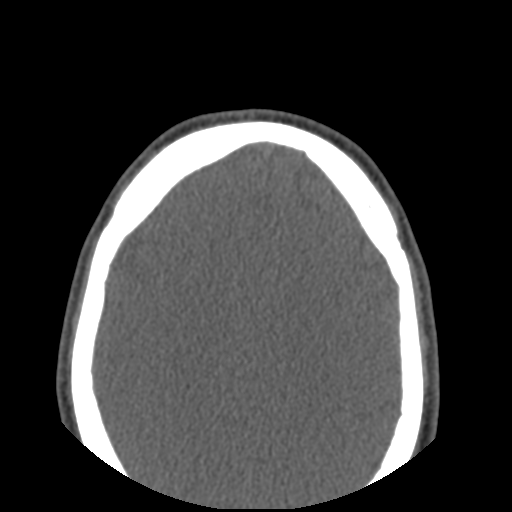

Imaging examsExames de imagem
Seven imaging studies grouped into six entries, ordered most recent first. Each viewer supports slider, scroll, click-and-drag, and arrow-key navigation. Two side-by-side pairs: the 29 October 2024 lumbar MRI + CT (same-day, same-admission), and the head/face workup grouping the 12 January 2026 CT facial sinuses with the 16 March 2023 US-guided biopsy.Sete estudos de imagem agrupados em seis entradas, ordenados do mais recente ao mais antigo. Cada visualizador aceita controle deslizante, rolagem do mouse, clicar-e-arrastar e teclas de seta. Dois pares lado a lado: a RM lombar + TC de 29 de outubro de 2024 (mesmo dia, mesma internação) e o agrupamento da região da cabeça e face que reúne a TC dos seios da face de 12 de janeiro de 2026 com a biópsia guiada por US de 16 de março de 2023.
MRI cervical spine · 26 March 2026RM da coluna cervical · 26 de março de 2026
MRI of the cervical spine without intravenous contrast. Indication: history of cervical disc prolapse (2022), right arm numbness and moderate neck pain — query right cervical radiculopathy. 74 frames across 5 acquired series — scrub the slider, scroll over the image, click-and-drag vertically, or use the arrow keys to navigate. RM da coluna cervical sem contraste endovenoso. Indicação: história de prolapso discal cervical (2022), parestesia em membro superior direito e cervicalgia moderada — investigação de radiculopatia cervical à direita. 74 imagens em 5 séries adquiridas — arraste o controle, role sobre a imagem, clique e arraste verticalmente, ou use as setas para navegar.
Radiologist's report
IdentifiersIdentificadores
- Patient. Joao Victor Creste Dias de Souza
- DOB. 17 October 1992
- Exam date. 26 March 2026 18:12
- Exam. MRI cervical spine
- Accession. NV1X01005196090
- Referring physician. Dr. Muhammad Najim
- Reported by. Dr. Mohsen Alkmeshi · GMC 7096445 · Apollo Radiology International UK
- Report status. Final · 2 April 2026
Clinical information & techniqueInformações clínicas e técnica
- History of cervical disc prolapse (2022).
- Right arm numbness and moderate neck pain. No arm weakness.
- Query right cervical radiculopathy.
- MRI of the cervical spine without intravenous contrast.
- No previous imaging available for comparison at the time of reporting.
FindingsAchados
- Loss of the normal cervical lordosis.
- Mid-cervical spondylotic change with shallow disc-osteophyte complexes from C3/4 to C6/7. Mild spinal canal narrowing at these levels with mild indentation of the cervical cord.
- Cervical cord signal remains normal — no cord atrophy or myelopathy.
- Uncovertebral hypertrophy most pronounced at C5/6 and C6/7, right more than left.
- Mild bilateral neural foraminal narrowing at C5/6 and C6/7, more pronounced on the right, with encroachment on the exiting right C6 and right C7 nerve roots. Mild left foraminal narrowing also present.
- No severe spinal canal stenosis.
- Vertebral body heights maintained. No focal marrow oedema or aggressive osseous lesion.
- Craniocervical junction and visualised paraspinal soft tissues unremarkable.
CT facial sinuses (12 Jan 2026) + US-guided biopsy (16 Mar 2023)TC dos seios da face (12 jan 2026) + Biópsia guiada por US (16 mar 2023)
Two head/face localised procedures grouped here for comparison. The 12 January 2026 CT was ordered after a bicycle facial trauma; the 16 March 2023 ultrasound-guided core-needle biopsy targeted soft-tissue thickening in the left frontal region. Both viewers below — drag, scroll, or use the slider on each. Dois procedimentos localizados na região da cabeça e face, agrupados aqui para comparação. A TC de 12 de janeiro de 2026 foi solicitada após trauma facial em acidente de bicicleta; a biópsia por agulha grossa guiada por ultrassom de 16 de março de 2023 visou espessamento de partes moles na região frontal esquerda. Visualizadores lado a lado abaixo — arraste, role ou use o controle de cada um.

Radiologist & procedure reports (translated)
CT facial sinuses · 12 Jan 2026TC dos seios da face · 12 jan 2026
- Patient. Joao Victor Creste Dias de Souza · MRN 3402824
- Requesting physician. Dr. José Roberto Chodraui · CRM 54911
- Indication. Facial trauma (post bicycle accident, 5 January 2026).
- Technique. Volumetric multi-detector CT, no IV contrast.
- Findings. Discrete bulging and soft-tissue irregularities in the right frontal region; regional bone structures intact. Mucosal thickening of the left sphenoid lateral wall and right maxillary sinus (with ostiomeatal-complex obliteration); focal thickening of the floor of the left maxillary sinus. Accessory ostium in the medial wall of the right maxillary sinus. Asymmetric inferior nasal turbinates (smaller on the right).
- Impression. Left sphenoidal and bilateral maxillary sinusopathy (chronic?). Soft-tissue findings on the right frontal region consistent with the recent facial trauma; bone structures preserved.
US-guided biopsy · 16 Mar 2023Biópsia guiada por US · 16 mar 2023
- Patient. Joao Victor Creste Dias de Souza · MRN 3402824
- Reviewed & signed. Dr. Rodrigo Gobbo Garcia · CRM 93948
- Target. Soft-tissue thickening, left frontal region — no clivage plane with the muscle thickness.
- Technique. Real-time ultrasound guidance · local anaesthetic block (Xylestesin / lidocaine 2%) + sedation by anaesthesia team · 18G semi-automatic coaxial cutting needle (tru-cut).
- Procedure. Access-route planning, asepsis and sterile field, local infiltration; 3 core fragments retrieved and sent for anatomopathological study.
- Outcome. Post-procedure ultrasound check showed no complications; patient monitored per institutional protocol and discharged uneventfully.
Histopathology · 16 Mar 2023 (lab no. AE23-016535)Anatomopatológico · 16 mar 2023 (lab nº AE23-016535)
- Patient.Paciente. Joao Victor Creste Dias de Souza · MRN 3402824 · visitpassagem E25873959
- Requesting physician.Médico solicitante. Dr. Dov Charles Goldenberg · CRM-SP 75340
- Reviewed & signed.Revisado e assinado. Dr. Daniel Amadeus Molon Batista · CRM 185087 (17 Mar 2023)
- Laboratory.Laboratório. Albert Einstein — Análises Clínicas e Anatomia Patológica · technical leadresponsável técnica Dra. Renée Zon Filippi · CRM-SP 96.083
- Clinical history.História clínica. Prior history of lipoma.Antecedente de lipoma.
- Specimen.Espécime. A — Soft tissue, biopsy of left frontal region.A — Partes moles, biópsia região frontal esquerda.
- Macroscopy.Macroscopia. Received in 10% buffered formalin: two filiform fragments of whitish, elastic tissue, jointly measuring 1.1 × 0.2 × 0.1 cm. Entire material submitted (1 block / 2 slides).Recebido em formalina tamponada 10%: dois fragmentos filiformes de tecido esbranquiçado e elástico, medindo em conjunto 1,1 × 0,2 × 0,1 cm. Todo material submetido (1 bloco / 2 lâminas).
- Diagnostic conclusion.Conclusão diagnóstica. Skin with cicatricial dermal fibrosis.Pele com fibrose dérmica cicatricial. No atypia or signs of neoplasia in the sample. No morphological evidence of malignancy.Não há atipias ou sinais de neoplasia na amostra. Não há indícios morfológicos de malignidade.
Patient notesAnotações do paciente (patient-supplied photographs)
Self-captured forehead photographs documenting the left-frontal soft-tissue area — the same region biopsied in March 2023 and revisited radiologically after the January 2026 facial trauma. Provided by the patient for visual reference alongside the radiology workup above. Fotografias da fronte capturadas pelo próprio paciente documentando a região de partes moles frontal esquerdo — a mesma área biopsiada em março de 2023 e reavaliada radiologicamente após o trauma facial de janeiro de 2026. Fornecidas pelo paciente como referência visual ao lado da avaliação radiológica acima.
MRI lumbar spine + CT lumbar / sacral spine · 29 October 2024RM da coluna lombar + TC da coluna lombar / sacral · 29 de outubro de 2024
Same-day pair at Hospital Vila Nova Star (Rede D'Or, São Paulo). Both ordered by Dr. Fausto Santana Celestino during the hospital admission. The CT identified an unsuspected fracture; the MRI characterised the disc protrusion. Side-by-side viewers below — drag, scroll, or use the slider on each. Par realizado no mesmo dia no Hospital Vila Nova Star (Rede D'Or, São Paulo). Ambos solicitados pelo Dr. Fausto Santana Celestino durante a internação. A TC identificou uma fratura insuspeita; a RM caracterizou a protrusão discal. Visualizadores lado a lado abaixo — arraste, role ou use o controle de cada um.
Radiologists' reports (translated)
MRI lumbar spineRM da coluna lombar
- Patient.Paciente. Joao Victor Creste Dias de Souza · MRN 3129863 · AN 190830993
- Reported by.Laudo por. Dr. Almir Antonio Lara Urbanetz · CRM 168889
- Technique.Técnica. T1- and T2-weighted multiplanar acquisitions, no contrast.
- Findings.Achados. Degenerative discopathy at L5-S1. Median + left-paramedian disc protrusion with annular fissure, dural impression, and tenuous contact with the descending left S1 nerve root. Vertebral bodies, alignments, facet joints, neural foramina, and cauda equina otherwise unremarkable.
- Conclusion.Conclusão. Degenerative discopathy at L5-S1 with disc protrusion.
CT lumbar / sacral spineTC da coluna lombar / sacral
- Patient.Paciente. Same · MRN 3129863 · AN 190824100
- Reviewed by.Revisado por. Dr. Marco de Andrade Bianchi · CRM 150803
- Technique.Técnica. Volumetric acquisition, no contrast.
- Findings.Achados. Complete transverse fracture of the first coccygeal vertebral body, with mild anterior displacement (0.2 cm) of the distal fragment and adjacent soft-tissue oedema. L1-L2 to L3-L4: no significant protrusions. L4-L5 and L5-S1: asymmetric disc bulges, predominantly paramedian and foraminal on the left. Mild degenerative facet hypertrophy. Canal and neural foramina otherwise of normal calibre.
- Conclusion.Conclusão. Fracture of the first coccygeal vertebral body.
Coronary CT angiography · 19 July 2023Angiotomografia das coronárias · 19 de julho de 2023
64-row multi-detector helical CT with iterative reconstruction software for radiation-dose reduction. Non-ionic iodinated IV contrast (350 mg/ml). Pre-medication: metoprolol 50 mg PO + isosorbide 3.75 mg SL. Performed at Albert Einstein Medicina Diagnóstica, São Paulo. 2,206 frames across 19 acquired series — scrub the slider, scroll, drag, or arrow-key to navigate. TC helicoidal multislice de 64 fileiras de detectores com software de reconstrução iterativa para redução de dose. Contraste iodado endovenoso não iônico (350 mg/ml). Pré-medicação: metoprolol 50 mg VO + isossorbida 3,75 mg SL. Realizado no Albert Einstein Medicina Diagnóstica, São Paulo. 2.206 imagens em 19 séries adquiridas — arraste o controle, role, arraste ou use as setas para navegar.
Radiologist's report (translated)
IdentifiersIdentificadores
- Patient. Joao Victor Creste Dias de Souza
- DOB. 17 October 1992
- Exam date. 19 July 2023
- Exam. Coronary CT angiography
- Patient ID. 3402824 · Access 32088962/12
- Institution. Albert Einstein Medicina Diagnóstica
- Reported by. Dr. Marcos Roberto Gomes de Queiroz · CRM-SP 90.835
Technique & medicationsTécnica e medicações
- 64-row multislice helical CT, iterative reconstruction for radiation-dose reduction.
- IV contrast: non-ionic iodinated, 350 mg/ml.
- Pre-medication: metoprolol 50 mg PO + isosorbide 3.75 mg SL.
Calcium score (Agatston) — non-contrast phaseEscore de cálcio (Agatston) — fase sem contraste
| Artery | Score (Agatston) | Volume |
|---|---|---|
| Left main coronary trunk | 0 | 0 |
| Anterior descending (LAD) | 7 | 10 |
| Circumflex | 0 | 0 |
| Right coronary | 0 | 0 |
| Total | 7 | 10 |
Calcium score of 7 — between the 75th and 90th percentiles for age and sex.
Findings — contrast phaseAchados — fase com contraste
- Right-dominant coronary circulation.
- Left main coronary trunk with normal trajectory and calibre; trifurcates into LAD, diagonalis and circumflex.
- LAD: long, contours the cardiac apex. Partially calcified plaque with positive remodelling in the proximal segment, just after origin, producing slight luminal reduction.
- First diagonal branch — small calibre, no luminal reduction. Second diagonal — fine calibre, patent.
- Diagonalis artery — moderate calibre, bifurcated, no luminal reduction.
- Circumflex — normal trajectory and calibre. First marginal branch — large calibre, ramified, no luminal reduction.
- Right coronary artery — normal trajectory and calibre.
- Posterior descending and posterior ventricular arteries — normal trajectory and calibre.
Luminal-reduction grading: slight < 50% · moderate 50–70% · severe > 70%.
Electroencephalogram (EEG) · 29 March 2023Eletroencefalograma (EEG) · 29 de março de 2023
Digital EEG performed in waking, drowsy and sleep states. Activated by hyperventilation and intermittent photostimulation. 16 trace pages — scrub the slider, scroll, drag or arrow-key to step through. EEG digital realizado em estados de vigília, sonolência e sono. Ativado por hiperpneia e fotoestimulação intermitente. 16 páginas de traçado — arraste o controle, role, arraste ou use as setas para avançar.
Neurologist's report (translated)
IdentifiersIdentificadores
- Patient. Joao Victor Creste Dias de Souza
- DOB. 17 October 1992
- Exam date. 29 March 2023
- Exam. Digital electroencephalogram (EEG)
- Patient ID. 3402824
- Reported by. Dra. Taissa Ferrari Marinho · CRM 120785
TechniqueTécnica
- Digital EEG recording across waking, drowsy and sleep states.
- Activations: hyperventilation and intermittent photostimulation.
FindingsAchados
- Background activity asymmetric — organised on the right, slightly disorganised on the left.
- Wakefulness: posterior rhythm 9–10 Hz, amplitude 20–40 μV. Other regions: theta and beta waves.
- Drowsiness: diffuse slowing of cerebral electrical activity.
- Sleep: physiological graphoelements (vertex sharp waves, sleep spindles) registered in habitual topography and incidence. Slow waves (theta & delta) increased in posterior left regions — the source of the asymmetry.
- No paroxysmal epileptiform graphoelements recorded.
- Hyperventilation and intermittent photostimulation did not evoke abnormal responses.
MRI brain + intracranial angio-MR · 23 April 2022RM do encéfalo + angio-RM intracraniana · 23 de abril de 2022
Multiplanar T1, T2 (with fat suppression), FLAIR, susceptibility and diffusion sequences, followed by 3D / 2D T1 with gadolinium. TOF and contrast-phase angiographic acquisitions of the intracranial arteries and veins. 2,862 frames across 29 acquired series — scrub the slider, scroll over the image, click-and-drag vertically, or use the arrow keys. Sequências multiplanares T1, T2 (com supressão de gordura), FLAIR, suscetibilidade magnética e difusão, seguidas de aquisições 3D / 2D em T1 com gadolínio. Aquisições angiográficas TOF e fase de contraste das artérias e veias intracranianas. 2.862 imagens em 29 séries adquiridas — arraste o controle, role sobre a imagem, clique e arraste verticalmente ou use as setas.
Radiologist's report (translated)
IdentifiersIdentificadores
- Patient. Joao Victor Creste Dias de Souza
- DOB. 17 October 1992
- Exam date. 23 April 2022
- Exam. Magnetic resonance imaging of the brain + intracranial angio-MR (arteries and veins)
- Patient ID. 3402824
- Reported by. Dr. Glauber Lilargem Siqueira · CRM 230127
- Reviewed & signed by. Dr. Ellison Fernando Cardoso · CRM 90787
TechniqueTécnica
- Multiplanar acquisition emphasising T1, T2 with fat-signal suppression and FLAIR.
- Magnetic susceptibility and diffusion sequences.
- Post-IV gadolinium: 3D and 2D T1, with and without fat suppression.
- Angiographic sequences: TOF and contrast-phase, plus GE-SPGR with IV gadolinium.
- Multiplanar reformatting at maximum intensity projection.
FindingsAchados
- Brain parenchyma with normal positions, morphology and signal characteristics.
- No areas of pathological enhancement or restricted diffusion identified.
- Mucosal thickening of the ethmoidal cells and maxillary sinuses, with a wavy aspect in the right maxillary sinus — may correspond to polyps / retention cysts.
- Arterial angio-MR: the major intracranial arterial trunks and main branches show normal trajectories, calibres and signal intensities. Small irregularities in the signal columns may reflect technique-inherent artefacts or discrete vessel-wall irregularities.
- Venous angio-MR: the major intracranial venous drainage sinuses and main cerebral veins show normal trajectory, calibre and signal intensity.